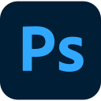

未找到匹配应用
全部结果
15 个结果
未找到匹配结果
键盘优先
自动整理
完全本地
无需账号
顺手，应该是默认选项。
少找一点，
多做一点。
想到，就找到。
中文、英文、拼音，或只是几个首字母。
用你习惯的方式，找到想打开的应用。
别名与模糊匹配，也在这里。
微信
没有匹配的应用或文件
创意


效率

开发


熟悉的应用，
舒服的位置。
自动发现，按类整理。常用的固定在前，
不常用的藏在后。你的应用库，由你决定。
真实应用图标自定义分类手动排序
不离开键盘，
也不打断思路。
Win应用库
Alt+Space聚焦搜索
方向键选中，Enter 打开。
也可以设成你喜欢的快捷键。
让工具，融入你的桌面。
恰到好处的存在感。
浅色或深色，通透或沉静。
把每一处，调成你的样子。
搜索应用和文件…
原生 Windows Composition 背板 · 色调、饱和度与圆角可调
本地优先，不止是一句承诺。
你的电脑。
你的数据。
好工具，做好自己该做的事。
无需把你的日常，送到别人的服务器。
- 无需账号
- 打开就用。没有登录，也没有云同步。
- 数据不上传
- 应用索引、设置和启动记录，都留在本机。
- 不记录搜索与输入
- 搜索文本和键盘输入，不会被持久化保存。
WinSpot 支持哪些系统？
目前面向 Windows 11 22H2 及以上的 x64 设备，需要 Microsoft Edge WebView2 Runtime。暂不保证 Windows 10、ARM64 或其他操作系统的支持。
接管 Win 键后，还能用系统组合键吗？
WinSpot 只在启用相应设置后处理单独的 Win 键，不接管 Win+E、Win+D 等系统组合键。Ctrl+Esc 仍可打开 Windows 开始菜单；遇到冲突时，可在托盘中临时暂停键盘接管。
文件搜索需要 Everything 吗？
不是必需。WinSpot 优先使用可用的 Everything；没有 Everything 时，会在设置中的本地目录搜索。搜索范围和速度取决于目录设置，不会建立全盘持久化文件索引。
可以改分类、名称和快捷键吗？
可以。你可以整理应用名称、别名、分类、固定状态、可见性和排序，也可以自定义唤起快捷键。设置与应用整理支持配置导入和导出。
在哪里获取和安装？
项目当前提供源码，可按仓库 README 的说明运行或打包。已发布的文件以 GitHub 发布页为准。项目文档说明安装包目前未配置代码签名，安装时 Windows 可能提示未知发布者。
查看安装与开发说明